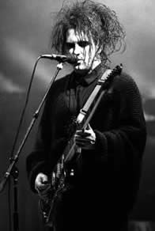

Em 21 de abril de 1959 nascia em Blackpool, Inglaterra,
aquele que seria o líder de umas das maiores e mais importantes
bandas de Rock do cenário mundial. Seu nome era Robert
Smith. Cresceu no bairro de Crowley, periferia de Sussex e desde
cedo sofreu diversas influências musicais. Seus irmãos
ouviam Beatles e Jimi Hendrix, e ainda havia a crescente onda
punk da década de 70 na Inglaterra.
Com
16 anos, Robert forma a banda Malice que logo após
viria a se chamar Easy Cure. Com ele, tocavam o guitarrista
e tecladista Porl Thompson, o baixista Michael Dempsey, e o baterista
(e depois tecladista) Laurence "Lol" Tolhurst. Ainda
com o nome de Easy Cure eles participam, em abril de 1977, de
um de um concurso musical na Alemanha, promovido pela gravadora
"Hansa", cujo prêmio incluía a produção
de uma demo-tape e um possível contrato de cinco anos.
Eles ganham o concurso mas não conseguem gravar a demo,
já que a gravadora esperava um som mais punk. Fazem alguns
shows até o final daquele ano, mas permanecem chateados
com a exigência da Hansa de fazer covers de punk rock.
Até março de 1978 eles ainda não
haviam conseguido gravar nenhuma demo pela Hansa, então
decidem investir numa gravação demo própria.
Gravam as músicas Killing an Arab, Boys Don't
Cry, Fire In Cairo, It's Not You e 10:15
Saturday Night. Levam a fita demo para várias gravadoras
e Chris Parry, diretor artístico da Polygram inglesa, se
interessa e posteriormente resolve produzir o primeiro single
da banda. Assim, a banda, agora sem Porl Thompson, muda o nome
para The Cure e Parry passa a empresariar a banda.
Em setembro de 1978 eles gravam o single Killing
An Arab e com a divulgação promovida por Parry
conseguem uma boa vendagem em pouco tempo.
Em 1979, enquanto faziam várias apresentações
agendadas por Parry, o Cure começava a produzir aquele
que seria o seu primeiro álbum: Three Imaginary Boys.
O álbum tem uma boa aceitação embora não
tenha emplacado logo de cara. Nos Estados Unidos, o disco é
lançado em 1980, com o nome de Boys Don’t Cry.
Logo após, o Cure lança os singles
Boys Don't Cry e Jumping Someone Else’s Train
e o sucesso cresce cada vez mais.
No segundo álbum, 17 Seconds (1980),
a banda começa a ter um significativo avanço na
técnica de estúdio. Neste álbum, o acompanhamento
sutil dos teclados, em arranjos de estrutura minimalista, contribui
na construção de uma atmosfera já um tanto
sombria e depressiva que os caracterizaria daí pra frente.
A música A Forest impulsionou as vendas do álbum
em todo o mundo e a banda arrisca a sua primeira turnê mundial.
Todos os discos desde então apenas viriam a confirmar a
popularidade crescente.
Dando
continuidade com a mudança sonora, o terceiro álbum,
Faith (1981), e o quarto, Pornography (1982),
marcam a fase mais sombria do Cure refletindo um período
muito conturbado de Robert Smith, perpassado por problemas com
drogas e principalmente alcoolismo. As letras são muito
tristes e os arranjos expressam toda a depressão de Robert.
Em razão desses álbuns e dessa fase obscura, eles
ganham o rótulo de góticos ou "darks",
aqui no Brasil. Nesse período, há várias
mudanças de formação da banda, inclusive
com a saída de Simon Gallup por desentendimentos com Robert
Smith. Nessa época Smith, chega a fazer algumas participações
como guitarrista pelo Siouxsie and The Banshees.
Após essa fase conturbada, o Cure volta
com uma proposta mais pop e um tanto quanto psicodélica.
Smith já estava cansado dos discos estarem atraindo platéias
cada vez mais raivosas e depressivas. Assim, esse tempo resulta
num EP chamado Japanese Whispers (1983), com as clássicas
The Walk, Lovecats e Let’s Go To Bed,
basicamente eletrônicas.
Em 1984 é lançado The Top,
considerado pela crítica como o melhor trabalho do Cure
até então, ao contrário de Bob Smith, que
o considerou o pior disco, por problemas de mixagem. Esse disco,
mistura psicodelia, pop de boa levada e aquele toque soturno bem
dosado.
O ano de 1985 foi marcado por uma virada na vida
do Cure. A banda parou de consumir drogas e teve uma das melhores
fases, com o sucesso do disco The Head on the Door, de
altíssima rotatividade aqui no Brasil, com In Between
Days (usada na abertura do programa Clip Clip, da
Globo, em 1985 e 1986) e Close to Me (que ganhou o astronauta
de prata da MTV como melhor clipe do ano em 1985). É um
disco pop, em que a depressão dá lugar a uma leve
melancolia.
O
ano seguinte foi o da consagração da banda. Lançaram
a coletânea Standing On The Beach que teve seu
nome mudado para Staring At The Sea. Eles estouram em
todo o mundo, fazendo dezenas de shows.
Em 1987, a banda passa semanas de reclusão
em uma mansão campestre isolada do público, para
começar a compor e ensaiar as músicas do próximo
disco, Kiss Me Kiss Me Kiss Me. Lançado no dia
5 de maio de 1987, o disco trazia 17 faixas e alguns dos mais
belos momentos da carreira do grupo. Mas o grande momento para
os fãs brasileiros foi a presença do grupo no país,
por duas semanas, aportando no Brasil no dia 19 de março
1987. A banda havia começado uma imensa turnê de
70 shows pelo mundo. Ao todo no Brasil, foram oito shows, apresentados
nas cidades de Porto Alegre (dois), Belo Horizonte (um), Rio de
Janeiro (dois) e São Paulo (três).
No ano seguinte, o Cure deu uma parada com os
trabalhos. Robert Smith casa-se com sua noiva Mary, em agosto.
Laurence Tolhurst sai da banda por motivos pessoais, e ainda tenta
mover um processo para ficar com o nome e parte dos lucros da
banda.
Em 1989 a banda lança o disco Disintegration,
no geral gravado ao vivo, com muito baixo de seis cordas e arranjos
elaborados e extensos, resultando em um disco melancólico,
triste, mas bonito. Para muitos o disco significava o fim do Cure.
A banda lança em 1990, Mixed Up,
um álbum de remixes velhos. Dois anos depois, o inédito
Wish coloca o The Cure de volta nas rádios com
a pop Friday I’m In Love. Assim eles voltam a rodar
o mundo numa gigantesca turnê, tocando em espetáculos
lotados, onde quer que fossem. Através do "Wish Tour",
eles gravam em 1993, os discos ao vivo Show e Paris.
Depois de muita espera, em 1994 termina o processo
movido por Laurence Tolhurst, tendo resultado a favor de Robert
Smith e da gravadora Fiction Records.
Em 1996, o Cure se apresenta no Brasil novamente,
agora na última edição do Hollywood Rock,
motivados por uma abaixo-assinado que os fãs brasileiros
organizaram. Nesse show, músicas de um álbum em
andamento foram apresentadas, Wild Mood Swings. Esse
disco é lançado assim que a banda retorna à
Inglaterra. Logo depois, o Cure parte para uma nova turnê,
a "The Swing Tour", que teve mais de 100 apresentações
ao redor do globo.
Durante o ano de 1997, o Cure lança Galore,
uma coletânea da segunda década de músicas
do Cure, que inclui a nova canção Wrong Number.
No começo de 1998, Robert Smith aparece em um episódio
do desenho animado americano South Park, e participa da trilha
sonora do filme Orgazmo, de Trey Parker e Matt Stone,
com a música A Sign From God. Com a sua banda,
Robert grava a música World In My Eyes para um
tributo ao Depeche Mode e grava também More Than This
para a trilha sonora do seriado The X-Files. No fim do
ano, a banda volta aos estúdios ao lado do produtor Paul
Corkett para a gravação de um novo disco, o qual
só seria terminado em meados de 1999 e lançado oficialmente
em 2000. Bloodflowers foi, na opinião de Robert,
o disco mais perfeito lançado pela banda. Há rumores
de que seria o último trabalho do Cure, mas isso não
se concretiza posteriormente.
Em 2001, Robert reúne a banda novamente
e o The Cure participa do festival alternativo europeu Roskilde.
No mesmo ano é lançada a coletânea Greatest
Hits, que vem com duas faixas inéditas, Cut Here
e Just Say Yes. No embalo, também sai um DVD com
o mesmo nome, trazendo diversos vídeo-clipes de toda a
carreira do Cure.
O
DVD épico Trilogy vem a seguir, em 2003, com shows
em Berlim nos quais a banda tocou, em seqüência, três
álbuns completos: Pornography, Disinte-gration e Bloodflowers.
Como se não fosse o bastante para os fãs, os extras
continham entrevistas da banda falando sobre as gravações
do disco a ser lançado no ano seguinte.
No ano de 2004, após lançar no começo
do ano o box set Join the Dots (uma compilação
de material inédito, b-sides e versões alternativas,
em quatro discos) a banda lança em junho o sucessor de
Bloodflowers, intitulado simplesmente The Cure. O álbum
acaba sendo elogiado pela crítica, com canções
sombrias, atmosféricas, mas que não deixam de lado
a veia pop do Cure. Os destaques são para End of The
World, e também para as belas Lost e Before
Three. Ainda, o primeiro álbum da banda (Three
Imaginary Boys) é remasterizado e lançado para
os fãs mais velhos. No ano seguinte o Cure sai novamente
em turnê para divulgar seu novo disco.
Em 2005, a banda dá sequência aos
lançamentos de remasterizações: Seventeen
Seconds, Faith e Pornography (todos como
"Deluxe Edition"). Em maio, os integrantes Perry Bamonte
e Roger O'Donnel abandonam o The Cure sem apresentarem motivos.
Porl Thompson é convidado a ocupar a função
de guitarrista.
Já em 2006, é lançado, exclusivamente
na Internet, a coletânea 4Play com novas versões
de velhos clássicos. Em seguida, The Top, The
Head On The Door e Kiss Me Kiss Me Kiss Me
também entram na linha de remasterizações.
Em maio é lançado o DVD e o CD The Cure Festival
com trinta músicas extraídas de apresentações
realizadas em diversos festivais do ano anterior. Desde então,
há rumores de um novo álbum em fase de conclusão.
Robert Smith chegou a admitir atravessar uma crise criativa para
composição de novas letras. No entanto, em meados
de 2007, a banda já visitava vários países
em uma turnê mundial.
No ano seguinte, a banda passou a disponibilizar
um single por mês a fim de despertar a curiosidade dos fãs.
Finalmente, em outubro, é lançado oficialmente o
décimo terceiro álbum da carreira. 4:13 Dream
traz 13 faixas inéditas que não se propõem
a inovar ou modernizar a identidade da banda. Este é um
trabalho que ratifica o estilo Rock/Pop consagrado sem que, no
entanto, seja repetitivo. De qualquer forma, um disco novo do
The Cure é sempre um evento que, no mínimo, merece
atenção dos velhos e novos ouvintes.
O The Cure foi, sem dúvida,
uma das bandas mais importantes da década de 80. Responsáveis
por grande parte dos hits dessa época, o grupo ainda continua
fazendo história, mais de 25 anos após o lançamento
do primeiro álbum. Com o lendário Robert Smith,
o único remanescente desde o início, a banda ultrapassa
os limites de qualquer rótulo que já tenha sido
enquadrada e continua agradando a todos os adoradores do bom e
velho Rock.
Por
Spectrum
Downloads
Disponíveis: